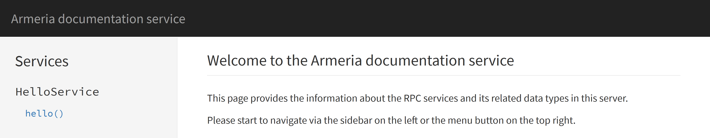

Browsing and invoking services with DocService¶
DocService is a single-page web application which provides the following useful features:
Browsing the list of gRPC, Thrift or annotated services and their operations available in the server
Invoking a service operation from a web form
Creating a permalink for the invocation you’ve made
First, add DocService to the ServerBuilder:
import com.linecorp.armeria.common.grpc.GrpcSerializationFormats;
import com.linecorp.armeria.server.docs.DocService;
import com.linecorp.armeria.server.ServerBuilder;
import com.linecorp.armeria.server.thrift.THttpService;
ServerBuilder sb = Server.builder();
sb.http(8080);
// Add a Thrift service which implements 'ThriftHelloService'.
sb.service("/hello", THttpService.of(new MyThriftHelloService()));
// Add a gRPC service which implements 'GrpcHelloService'.
// Unlike Thrift, you must enable gRPC-Web and unframed requests explicitly.
sb.service(GrpcService.builder()
.addService(new MyGrpcHelloService())
.supportedSerializationFormats(GrpcSerializationFormats.values())
.enableUnframedRequests(true)
.build());
// Add an annotated HTTP service.
sb.annotatedService("/service", new MyAnnotatedService());
// Add a DocService which scans all Thrift and gRPC services added to the server.
sb.serviceUnder("/docs", new DocService());
Server server = sb.build();
server.start().join();Note
DocService will scan for all supported services automatically when the Server starts up.
Please see Including and excluding service methods to learn how to include or exclude certain services.
Open http://127.0.0.1:8080/docs/ in your web browser and you’ll see the following screen:
The left pane of the screen shows the list of the available services and their operations. If you defined
structs, enums or exceptions, they will appear there as well. If you click the hello() operation, the
right pane will show the details of the operation such as the list of the parameters, the return type and
the exceptions which may be thrown:
As you may have noticed, the ‘description’ column is empty. DocService can even show the docstrings
you put into your .thrift or .proto files with a little bit of build configuration. We will visit this
later in this document.
Debug form¶
Now, scroll down the right pane. You’ll find a ‘debug form’ which enables you to send an RPC request in human-friendly JSON format:

Type the request parameters like the following and click the ‘Submit to: /hello’ button:
{
"name": "Armeria"
}The result pane right next to the text area you entered the JSON request will show the reply in JSON:

The current location of your web browser should be updated like the following:
http://127.0.0.1:8080/docs/#!method/com.example.ThriftHelloService/hello?args=%7B%22name%22%3A%22Armeria%22%7D
Imagine you build a request that reproduces the problem using the debug form and share the URL of the request with your colleagues. It’s way more convenient than traditional workflow for replaying an RPC request.
Sending HTTP headers¶
You may want to send an additional HTTP header such as authorization when sending an RPC request via
a debug form. Click the ‘Edit additional HTTP headers’ link below the text area, and you’ll see another
text area which allows you to specify the HTTP headers you want to add:

Including and excluding service methods¶
You can include or exclude service methods using DocServiceFilter when building a DocService
with a DocServiceBuilder:
import com.linecorp.armeria.server.docs.DocService;
import com.linecorp.armeria.server.docs.DocServiceFilter;
ServerBuilder sb = Server.builder();
...
sb.serviceUnder("/docs", DocService.builder()
// Include Thrift services and Annotated services.
.include(DocServiceFilter.ofThrift().or(
DocServiceFilter.ofAnnotated()))
// Exclude the method whose name is "foo" in Thrift services.
.exclude(DocServiceFilter.ofThrift().and(
DocServiceFilter.ofMethodName("foo")))
.build());
...The inclusion rule is as follows:
No
include(DocServiceFilter)andexclude(DocServiceFilter)is called: include all methods.Only
exclude(DocServiceFilter)is called: include all methods except the methods which the exclusion filter returnstrue.Only
include(DocServiceFilter)is called: include the methods which the inclusion filter returnstrue.include(DocServiceFilter)andexclude(DocServiceFilter)is called: include the methods which the inclusion filter returnstrueand the exclusion filter returnsfalse.
Example requests and headers¶
You can specify the example requests and HTTP headers which will be used as the default value of the debug form
with a DocServiceBuilder:
import com.linecorp.armeria.common.HttpHeaders;
import static com.linecorp.armeria.common.HttpHeaderNames.AUTHORIZATION;
ServerBuilder sb = Server.builder();
...
sb.serviceUnder("/docs", DocService.builder()
// HTTP headers for all services
.exampleHttpHeaders(
HttpHeaders.of(AUTHORIZATION, "bearer b03c4fed1a"))
// Thrift example request for 'ThriftHelloService.hello()'
.exampleRequest(new ThriftHelloService.hello_args("Armeria"))
// gRPC example request for 'GrpcHelloService.Hello()'
.exampleRequestForMethod(GrpcHelloServiceGrpc.SERVICE_NAME,
"Hello", // Method name
HelloRequest.newBuilder().setName("Armeria").build())
.build());
...By adding examples to DocService, your users will be able to play with the services you wrote
without a hassle and thus will understand them sooner and better.
Adding docstrings¶
Configure your build script so that it generates the required metadata file for your .thrift or .proto
files into the specific location in the class path.
For Thrift:
Use the
--gen jsonoption to generate the.jsonfile that contains the docstrings.Put the generated
.jsonfile into theMETA-INF/armeria/thriftdirectory.
For gRPC:
Configure the protobuf plugin to generate the
.dscfile that contains the docstrings and put it into theMETA-INF/armeria/grpcdirectory:Using Gradle:
protobuf { generateProtoTasks { all().each { task -> task.generateDescriptorSet = true task.descriptorSetOptions.includeSourceInfo = true task.descriptorSetOptions.includeImports = true task.descriptorSetOptions.path = "${buildDir}/resources/main/META-INF/armeria/grpc/service-name.dsc" } } }Using Maven:
<!-- See https://www.xolstice.org/protobuf-maven-plugin/usage.html for more information. --> <plugin> <groupId>org.xolstice.maven.plugins</groupId> <artifactId>protobuf-maven-plugin</artifactId> <version>0.6.1</version> <configuration> <protocArtifact>com.google.protobuf:protoc:${protoc.version}:exe:${os.detected.classifier}</protocArtifact> <pluginId>grpc-java</pluginId> <pluginArtifact>io.grpc:protoc-gen-grpc-java:${grpc.version}:exe:${os.detected.classifier}</pluginArtifact> <writeDescriptorSet>true</writeDescriptorSet> <includeDependenciesInDescriptorSet>true</includeDependenciesInDescriptorSet> <includeSourceInfoInDescriptorSet>true</includeSourceInfoInDescriptorSet> <descriptorSetOutputDirectory>${project.build.outputDirectory}/META-INF/armeria/grpc</descriptorSetOutputDirectory> <descriptorSetFileName>${project.build.finalName}.dsc</descriptorSetFileName> </configuration> <executions> <execution> <goals> <goal>compile</goal> <goal>compile-custom</goal> </goals> </execution> </executions> </plugin>
For annotated service, use @Description annotation:
import com.linecorp.armeria.server.annotation.Description;
@Description("A service that provides user information.")
public class UserService {
@Get("/users/{id}")
@Description("Retrieves the user information by the given user ID.")
public User getUser(@Param("id") @Description("the user ID") String id) { ... }
...
}